03-redis数据持久化篇
从两个点，我们来了解下Redis持久化
为什么需要持久化
Redis是个基于内存的数据库。
那服务一旦宕机，内存中的数据将全部丢失。
通常的解决方案是从后端数据库恢复这些数据，但后端数据库有性能瓶颈
如果是大数据量的恢复，1、会对数据库带来巨大的压力，2、数据库的性能不如Redis。
导致程序响应慢。
所以对Redis来说，实现数据的持久化，避免从后端数据库中恢复数据，是至关重要的。
- Redis持久化有哪些方式呢？为什么我们需要重点学RDB和AOF？
从严格意义上说，Redis服务提供四种持久化存储方案：RDB、AOF、虚拟内存（VM）和 DISKSTORE。
最关键的是目前官方文档上能够看到的Redis对持久化存储的支持明确的就只有两种方案（https://redis.io/topics/persistence）：RDB和AOF。
所以本文也只会具体介绍这两种持久化存储方案的工作特定和配置要点。
RDB 持久化
RDB 就是 Redis DataBase 的缩写，中文名为快照/内存快照
RDB持久化是把当前进程数据生成快照保存到磁盘上的过程
由于是某一时刻的快照，那么快照中的值要早于或者等于内存中的值。
优点：数据压缩、恢复速度快
缺点：非实时备份，可能导致数据丢失
AOF 持久化
Redis是“写后”日志，Redis先执行命令，把数据写入内存，然后才记录日志。
日志里记录的是Redis收到的每一条命令，这些命令是以文本形式保存。
PS: 大多数的数据库采用的是写前日志（WAL），例如MySQL，通过写前日志和两阶段提交，实现数据和逻辑的一致性。
AOF类似于mysql的binlog，可以设置为每秒/每次操作，都以追加的形式，记录到日志里。
优点：非常安全，撑死丢失1s的数据，并且日志有可读性
缺点：文件较大，恢复较慢
1.RDB持久化实战
触发方式
触发rdb持久化的方式有2种，分别是手动触发和自动触发。
手动触发
手动触发分别对应save和bgsave命令
- save命令：阻塞当前Redis服务器，直到RDB过程完成为止，对于内存 比较大的实例会造成长时间阻塞，
线上环境不建议使用 - bgsave命令：Redis进程执行fork操作创建子进程，RDB持久化过程由子 进程负责，完成后自动结束。
- 阻塞只发生在fork阶段，一般时间很短
bgsave流程图如下所示
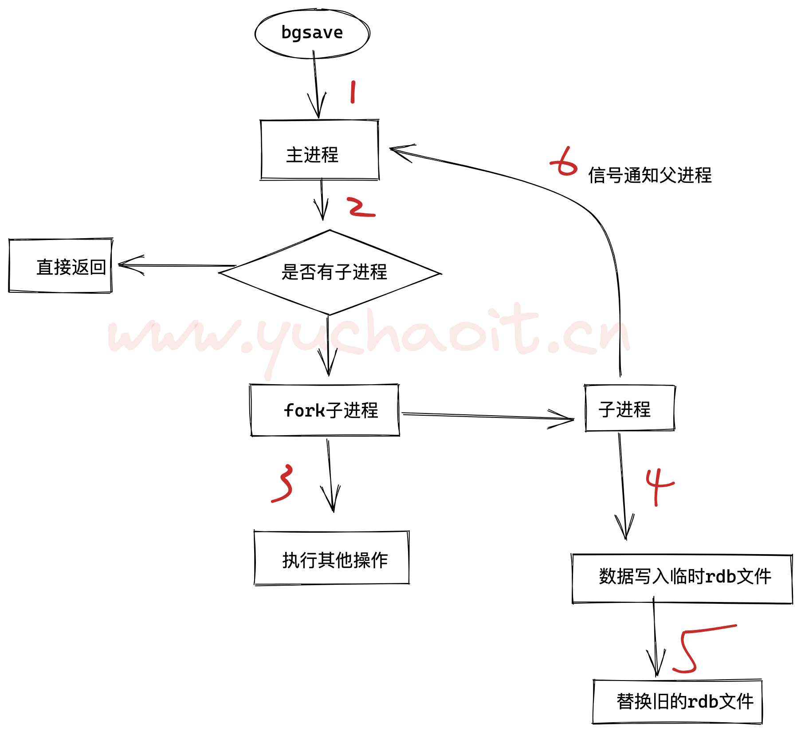
具体流程如下：
1.redis客户端执行bgsave命令或者自动触发bgsave命令；
2.主进程判断当前是否已经存在正在执行的子进程，如果存在，那么主进程直接返回；
3.如果不存在正在执行的子进程，那么就fork一个新的子进程进行持久化数据，fork过程是阻塞的，fork操作完成后主进程即可执行其他操作；
4.子进程先将数据写入到临时的rdb文件中，待快照数据写入完成后再原子替换旧的rdb文件；
5.同时发送信号给主进程，通知主进程rdb持久化完成，主进程更新相关的统计信息（info Persitence下的rdb_*相关选项）。
自动触发
在以下4种情况时会自动触发
- redis.conf中配置
save m n，即在m秒内有n次修改时，自动触发bgsave生成rdb文件； - 主从复制时，从节点要从主节点进行全量复制时也会触发bgsave操作，生成当时的快照发送到从节点；
- 执行debug reload命令重新加载redis时也会触发bgsave操作；
- 默认情况下执行shutdown命令时，如果没有开启aof持久化，那么也会触发bgsave操作；
RDB配置参数解释
快照周期：内存快照虽然可以通过技术人员手动执行SAVE或BGSAVE命令来进行，但生产环境下多数情况都会设置其周期性执行条件。
Redis中默认的周期新设置
# 周期性执行条件的设置格式为
save <seconds> <changes>
# 默认的设置为：
save 900 1
# 900秒（15分钟）内至少1个key值改变（则进行数据库保存--持久化）
save 300 10
# 300秒（5分钟）内至少10个key值改变（则进行数据库保存--持久化）
save 60 10000
# 60秒（1分钟）内至少10000个key值改变（则进行数据库保存--持久化）
# 以下设置方式为关闭RDB快照功能
save ""
以上三项默认信息设置代表的意义是：
- 如果900秒内有1条Key信息发生变化，则进行快照；
- 如果300秒内有10条Key信息发生变化，则进行快照；
- 如果60秒内有10000条Key信息发生变化，则进行快照。
- 可以按照这个规则，根据自己的
实际请求压力进行设置调整，也就是你判断下，你们的redis读写频率大约是多少，是否高频，还是低频触发RDB。
- 可以按照这个规则，根据自己的
- 其它相关配置
# 文件名称
dbfilename www.yuchaoit.cn_redis_dump.rdb
# 文件保存路径
dir /www.yuchaoit.cn/redis/data/
# 如果持久化出错，主进程是否停止写入
stop-writes-on-bgsave-error yes
# 是否压缩
rdbcompression yes
# 导入时是否检查
rdbchecksum yes
参数详解
dbfilename：RDB文件在磁盘上的名称。
dir：RDB文件的存储路径。默认设置为“./”，也就是Redis服务的主目录。
stop-writes-on-bgsave-error：上文提到的在快照进行过程中，主进程照样可以接受客户端的任何写操作的特性，是指在快照操作正常的情况下。如果快照操作出现异常（例如操作系统用户权限不够、磁盘空间写满等等）时，Redis就会禁止写操作。这个特性的主要目的是使运维人员在第一时间就发现Redis的运行错误，并进行解决。一些特定的场景下，您可能需要对这个特性进行配置，这时就可以调整这个参数项。该参数项默认情况下值为yes，如果要关闭这个特性，指定即使出现快照错误Redis一样允许写操作，则可以将该值更改为no。
rdbcompression：该属性将在字符串类型的数据被快照到磁盘文件时，启用LZF压缩算法。Redis官方的建议是请保持该选项设置为yes，因为“it’s almost always a win”。
rdbchecksum：从RDB快照功能的version 5 版本开始，一个64位的CRC冗余校验编码会被放置在RDB文件的末尾，以便对整个RDB文件的完整性进行验证。
这个功能大概会多损失10%左右的性能，但获得了更高的数据可靠性。
所以如果您的Redis服务需要追求极致的性能，就可以将这个选项设置为no。
操作部分（RDB）⭐️
# 配置文件
[root@db-51 /opt/redis]#cat /opt/redis_6379/conf/redis_6379.conf
daemonize yes
bind 127.0.0.1 10.0.0.51
port 6379
pidfile /opt/redis_6379/pid/redis_6379.pid
logfile /opt/redis_6379/logs/redis_6379.log
save 900 1
save 300 10
save 60 10000
dbfilename www.yuchaoit.cn_redis_dump.rdb
dir /www.yuchaoit.cn/redis/data/
stop-writes-on-bgsave-error yes
rdbcompression yes
rdbchecksum yes
[root@db-51 /opt/redis]#mkdir -p /www.yuchaoit.cn/redis/data
[root@db-51 /opt/redis]#redis-cli shutdown
# 查看数据目录
[root@db-51 /opt/redis]#ls /www.yuchaoit.cn/redis/data/
[root@db-51 /opt/redis]#
# 重启
[root@db-51 /opt/redis]#redis-server /opt/redis_6379/conf/redis_6379.conf
[root@db-51 /opt/redis]#ls /www.yuchaoit.cn/redis/data/
# 测试数据
[root@db-51 /opt/redis]#redis-cli set name chaoge
OK
[root@db-51 /opt/redis]#redis-cli set age 18
OK
[root@db-51 /opt/redis]#redis-cli dbsize
(integer) 2
# 触发持久化
1. 手动bgsave
[root@db-51 /opt/redis]#redis-cli bgsave
Background saving started
[root@db-51 /opt/redis]#
[root@db-51 /opt/redis]#ls /www.yuchaoit.cn/redis/data/
www.yuchaoit.cn_redis_dump.rdb
#
2. 达到持久化条件
[root@db-51 /opt/redis]#ll /www.yuchaoit.cn/redis/data/
total 0
# 达到自动RDB条件写入数据
for((i=1;i<=10086;i++));do
echo $i
redis-cli -h 10.0.0.51 -p 6379 set 这是第$i条数据 这条数据的内容为$i
done;
# 查看keys数量
[root@db-51 /opt/redis]#
[root@db-51 /opt/redis]#redis-cli dbsize
(integer) 10088
# 测试数据恢复
测试RDB数据恢复⭐️
# 查看redis数据目录
[root@db-51 /opt/redis]#redis-cli config get dir
1) "dir"
2) "/www.yuchaoit.cn/redis/data"
# 查看RDB文件名
[root@db-51 /opt/redis]#redis-cli config get dbfilename
1) "dbfilename"
2) "www.yuchaoit.cn_redis_dump.rdb"
将备份的RDB文件，放在指定目录，重启Redis即可恢复数据
[root@db-51 /opt/redis]#ll /www.yuchaoit.cn/redis/data/ -h
total 524K
-rw-r--r-- 1 root root 521K Aug 6 15:40 www.yuchaoit.cn_redis_dump.rdb
# 恢复步骤
[root@db-51 /opt/redis]#mv /www.yuchaoit.cn/redis/data/www.yuchaoit.cn_redis_dump.rdb /opt/
# 正常退出，redis会自动再次持久化数据
[root@db-51 /www.yuchaoit.cn/redis/data]#redis-cli shutdown
[root@db-51 /www.yuchaoit.cn/redis/data]#ll
total 524
-rw-r--r-- 1 root root 532636 Aug 6 15:43 www.yuchaoit.cn_redis_dump.rdb
# 可以模拟突然故障，这样就不会持久化了，模拟数据丢失
[root@db-51 /www.yuchaoit.cn/redis/data]#!redis-server
redis-server /opt/redis_6379/conf/redis_6379.conf
[root@db-51 /www.yuchaoit.cn/redis/data]#ll
total 0
[root@db-51 /www.yuchaoit.cn/redis/data]#redis-cli dbsize
(integer) 0
# 数据恢复
# 于超老师提醒、、这里别踩坑了，redis退出时自动RDB持久化，可能会覆盖你的数据
# 1.先恢复数据到dir 2. 启动redis
[root@db-51 /www.yuchaoit.cn/redis/data]#cp /opt/www.yuchaoit.cn_redis_dump.rdb .
[root@db-51 /www.yuchaoit.cn/redis/data]#!ps
ps -ef|grep redis
root 76116 48508 0 15:51 pts/1 00:00:00 grep --color=auto redis
[root@db-51 /www.yuchaoit.cn/redis/data]#
[root@db-51 /www.yuchaoit.cn/redis/data]#!redis-server
redis-server /opt/redis_6379/conf/redis_6379.conf
[root@db-51 /www.yuchaoit.cn/redis/data]#ll
total 524
-rw-r--r-- 1 root root 532636 Aug 6 15:51 www.yuchaoit.cn_redis_dump.rdb
[root@db-51 /www.yuchaoit.cn/redis/data]#
[root@db-51 /www.yuchaoit.cn/redis/data]#
[root@db-51 /www.yuchaoit.cn/redis/data]#redis-cli dbsize
(integer) 10088
# 一次性列出所有key
[root@db-51 /www.yuchaoit.cn/redis/data]#redis-cli --scan --pattern '*'
# 或者
redis-cli --raw KEYS '*'
RDB面试题问答
所谓面试题，就是看你改工具使用的熟练度，是否经过了长时间的验证，能发现，解决工具使用过程中的各种坑，细节。
1.若没配置save参数
- shutdown/pkill/kill 都不会持久化数据
- 可以手动执行bgsave
2. 配置了save参数后
1. shutdown/pkill/kill 都会自动触发bgsave持久化
2. 但是pkill -9 redis 不会持久化
关于恢复：
- RDB持久化的文件名，要和配置文件里一致，否则不识别
- RDB备份恢复，都只有一个rdb文件
关于版本RDB，向下兼容低版本，反过来不行
3.x > 5.x 没问题
5.x > 3.x 错误
RDB总结优缺点
- 优点
- RDB文件是某个时间节点的快照，默认使用LZF算法进行压缩，压缩后的文件体积远远小于内存大小，适用于备份、全量复制等场景；
- Redis加载RDB文件恢复数据要远远快于AOF方式；
- 缺点
- RDB方式实时性不够，无法做到秒级的持久化；
- 每次调用bgsave都需要fork子进程，fork子进程属于重量级操作，频繁执行成本较高；
- RDB文件是二进制的，没有可读性，AOF文件在了解其结构的情况下可以手动修改或者补全；
- 版本兼容RDB文件问题；
针对RDB不适合实时持久化的问题，Redis提供了AOF持久化方式来解决
2.AOF持久化实战
Redis是“写后”日志，Redis先执行命令，把数据写入内存，然后才记录日志。
日志里记录的是Redis收到的每一条命令，这些命令是以文本形式保存。
PS: 大多数的数据库采用的是写前日志（WAL），例如MySQL，通过写前日志和两阶段提交，实现数据和逻辑的一致性。
而AOF日志采用写后日志，即先写内存，后写日志。
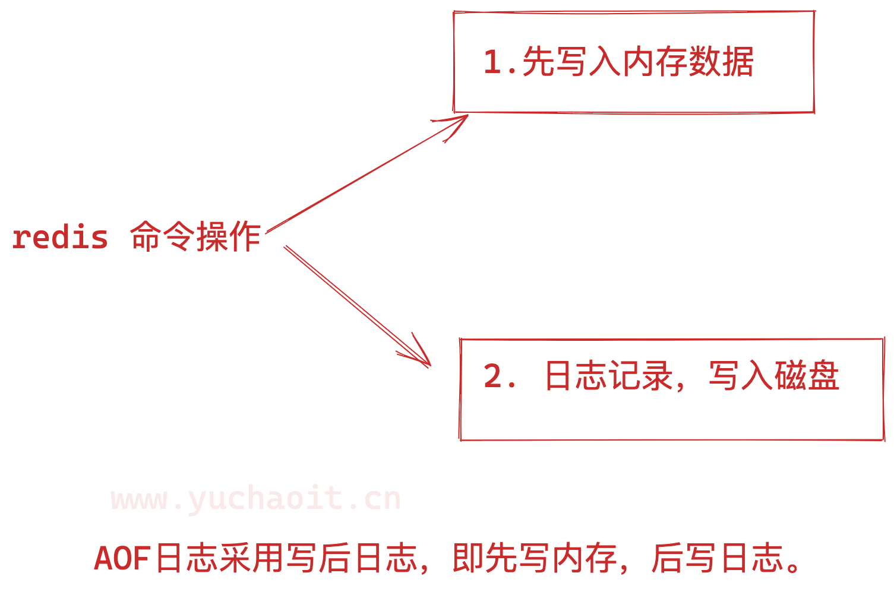
为什么采用写后日志
Redis要求高性能，采用写日志有两方面好处：
- 避免额外的检查开销：Redis 在向 AOF 里面记录日志的时候，并不会先去对这些命令进行语法检查。所以，如果先记日志再执行命令的话，日志中就有可能记录了错误的命令，Redis 在使用日志恢复数据时，就可能会出错。
- 不会阻塞当前的写操作
但这种方式存在潜在风险：
- 如果命令执行完成，写日志之前宕机了，会丢失数据。
- 主线程写磁盘压力大，导致写盘慢，阻塞后续操作。
如何实现AOF
AOF日志记录Redis的每个写命令，步骤分为：命令追加（append）、文件写入（write）和文件同步（sync）。
- 命令追加 当AOF持久化功能打开了，服务器在执行完一个写命令之后，会以协议格式将被执行的写命令追加到服务器的 aof_buf 缓冲区。
- 文件写入和同步 关于何时将 aof_buf 缓冲区的内容写入AOF文件中，Redis提供了三种写回策略：
| 参数 | 机制 | 优点 | 缺点 |
|---|---|---|---|
| always | 每个命令执行完毕，立即同步写入日志到磁盘 | 可靠性强，数据基本不丢 | 每个命令都要写入日志磁盘，redis性能影响很大 |
| everysec | 每个命令执行完毕，日志只会写入AOF文件的内存缓冲区，每隔一秒把缓冲区的日志写入到磁盘 | 性能和安全性平滑 | 宕机会丢失1秒内的数据 |
| no | 每个命令写完，日志只写入AOF文件的内存缓冲区，操作系统自由调度，持久化到磁盘 | 性能足够好 | 宕机时，不确定丢失的数据 |
三种写回策略的优缺点
上面的三种写回策略体现了一个重要原则：trade-off，取舍，指在性能和可靠性保证之间做取舍。
关于AOF的同步策略是涉及到操作系统的 write 函数和 fsync 函数的，在《Redis设计与实现》中是这样说明的：
为了提高文件写入效率，在现代操作系统中，当用户调用write函数，将一些数据写入文件时，操作系统通常会将数据暂存到一个内存缓冲区里，当缓冲区的空间被填满或超过了指定时限后，才真正将缓冲区的数据写入到磁盘里。
这样的操作虽然提高了效率，但也为数据写入带来了安全问题：如果计算机停机，内存缓冲区中的数据会丢失。为此，系统提供了fsync、fdatasync同步函数，可以强制操作系统立刻将缓冲区中的数据写入到硬盘里，从而确保写入数据的安全性。
AOF图解原理
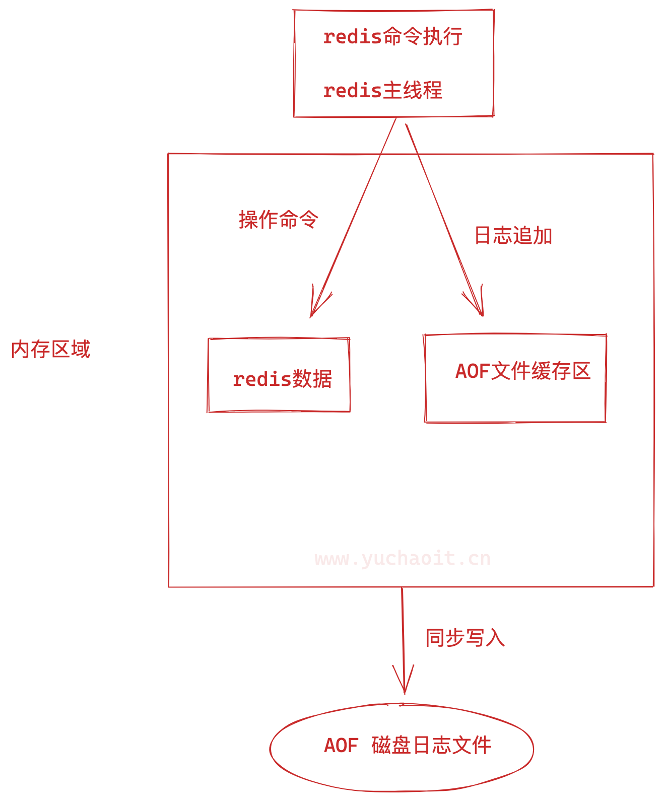
开启AOF功能
默认情况下，Redis是没有开启AOF的，可以通过配置redis.conf文件来开启AOF持久化，关于AOF的配置如下：
# appendonly参数开启AOF持久化
appendonly yes
# AOF持久化的文件名，默认是appendonly.aof
appendfilename "www.yuchaoit.cn_appendonly.aof"
# AOF文件的保存位置和RDB文件的位置相同，都是通过dir参数设置的
dir /www.yuchaoit.cn/redis/data/
# 同步策略
# appendfsync always
appendfsync everysec
# appendfsync no
# aof重写期间是否同步
# 优化参数，暂时先不用去琢磨，用于根据生产环境的性能问题，查阅调整
# no-appendfsync-on-rewrite no
# 重写触发配置
# auto-aof-rewrite-percentage 100
#
# auto-aof-rewrite-min-size 64mb
# 加载aof出错如何处理
# aof-load-truncated yes
# 文件重写策略
# aof-rewrite-incremental-fsync yes
关闭RDB，开启AOF，查看实验
[root@db-51 /www.yuchaoit.cn/redis/data]#cat /opt/redis_6379/conf/redis_6379.conf
daemonize yes
bind 127.0.0.1 10.0.0.51
port 6379
pidfile /opt/redis_6379/pid/redis_6379.pid
logfile /opt/redis_6379/logs/redis_6379.log
dir /www.yuchaoit.cn/redis/data/
appendonly yes
appendfilename "www.yuchaoit.cn_appendonly.aof"
dir /www.yuchaoit.cn/redis/data/
appendfsync everysec
appendonly yes
appendfilename "www.yuchaoit.cn_appendonly.aof"
查看日志，重启redis
[root@db-51 /www.yuchaoit.cn/redis/data]#
[root@db-51 /www.yuchaoit.cn/redis/data]#redis-cli shutdown
[root@db-51 /www.yuchaoit.cn/redis/data]#
[root@db-51 /www.yuchaoit.cn/redis/data]#!redis-server
redis-server /opt/redis_6379/conf/redis_6379.conf
[root@db-51 /www.yuchaoit.cn/redis/data]#ll
total 524
-rw-r--r-- 1 root root 0 Aug 6 17:39 www.yuchaoit.cn_appendonly.aof
-rw-r--r-- 1 root root 532636 Aug 6 17:39 www.yuchaoit.cn_redis_dump.rdb
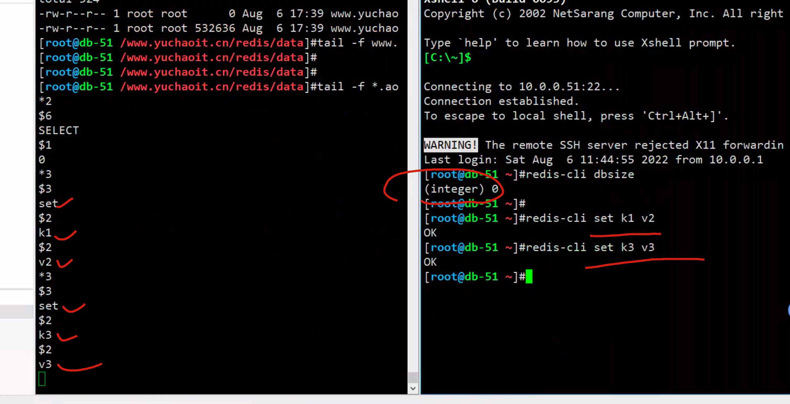
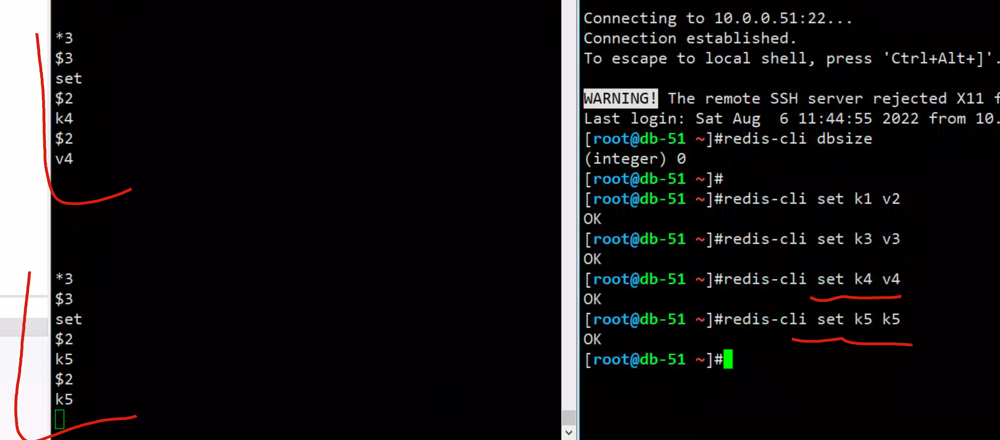
AOF数据持久化效果查看
恢复也都是基于数据目录下的aof日志恢复的，全挪走就废了
恢复思路依然是
1. 先将日志放入数据目录
2. 再启动redis
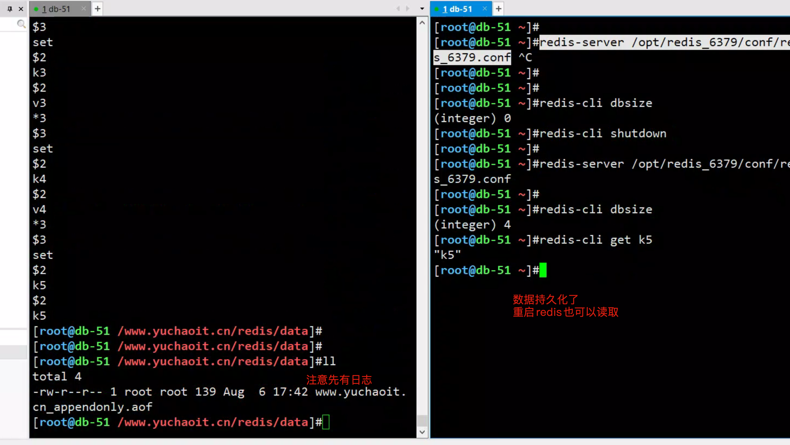
至此我们就已对redis的数据备份进行了AOF机制的持久化。
可以用于数据恢复。
AOF日志重写机制
这一块作为了解，以后若是的确需要考虑redis日志的重写，再来看这一块的资料。
AOF会记录每个写命令到AOF文件，随着时间越来越长，AOF文件会变得越来越大。
如果不加以控制，会对Redis服务器，甚至对操作系统造成影响，而且AOF文件越大，数据恢复也越慢。
为了解决AOF文件体积膨胀的问题，Redis提供AOF文件重写机制来对AOF文件进行“瘦身”。
测试AOF重写机制
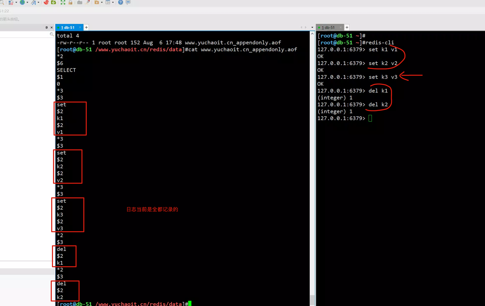
[root@db-51 ~]#redis-cli
127.0.0.1:6379> set k1 v1
OK
127.0.0.1:6379> set k2 v2
OK
127.0.0.1:6379> set k3 v3
OK
127.0.0.1:6379> del k1
(integer) 1
127.0.0.1:6379> del k2
(integer) 1
127.0.0.1:6379>
执行bgrewriteaof命令
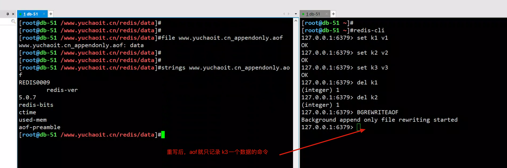
有两个配置项控制AOF重写的触发
auto-aof-rewrite-min-size:表示运行AOF重写时文件的最小大小，默认为64MB。
auto-aof-rewrite-percentage:这个值的计算方式是，当前aof文件大小和上一次重写后aof文件大小的差值，再除以上一次重写后aof文件大小。也就是当前aof文件比上一次重写后aof文件的增量大小，和上一次重写后aof文件大小的比值。
手工测试AOF日志瘦身（重写）
# 批量写入
for((i=1;i<=10086;i++));do echo $i; redis-cli -h 10.0.0.51 -p 6379 set 这是第$i条数据 这条数据的内容为$i ; done;
# 批量删除
for((i=1;i<=3000;i++));do echo $i; redis-cli -h 10.0.0.51 -p 6379 del 这是第$i条数据 ; done;
# 测一测AOF文件大小
[root@db-51 /www.yuchaoit.cn/redis/data]#du -h www.yuchaoit.cn_appendonly.aof 524K www.yuchaoit.cn_appendonly.aof
[root@db-51 /www.yuchaoit.cn/redis/data]#
[root@db-51 /www.yuchaoit.cn/redis/data]#
[root@db-51 /www.yuchaoit.cn/redis/data]#du -h www.yuchaoit.cn_appendonly.aof 1.5M www.yuchaoit.cn_appendonly.aof
[root@db-51 /www.yuchaoit.cn/redis/data]#du -h www.yuchaoit.cn_appendonly.aof 368K www.yuchaoit.cn_appendonly.aof
3.AOF混合RDB持久化
RDB 和 AOF 持久化各有利弊，RDB 可能会导致一定时间内的数据丢失，而 AOF 由于文件较大则会影响 Redis 的启动速度，为了能同时使用 RDB 和 AOF 各种的优点，Redis 4.0 之后新增了混合持久化的方式。
在开启混合持久化的情况下，AOF 重写时会把 Redis 的持久化数据，以 RDB 的格式写入到 AOF 文件的开头，之后的数据再以 AOF 的格式化追加的文件的末尾。
混合持久化的数据存储结构如下图所示：
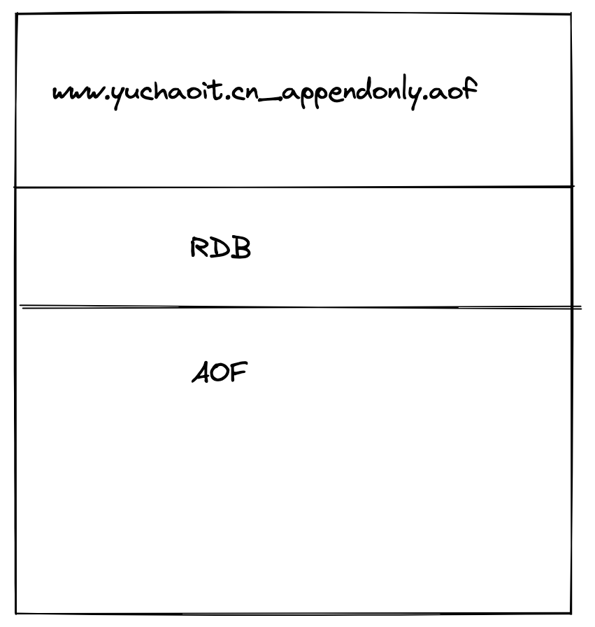
开启混合持久化
[root@db-51 /www.yuchaoit.cn/redis/data]#cat /opt/redis_6379/conf/redis_6379.conf
daemonize yes
bind 127.0.0.1 10.0.0.51
port 6379
pidfile /opt/redis_6379/pid/redis_6379.pid
logfile /opt/redis_6379/logs/redis_6379.log
dir /www.yuchaoit.cn/redis/data/
save 900 1
save 300 10
save 60 10000
dbfilename www.yuchaoit.cn_redis_dump.rdb
appendonly yes
appendfilename "www.yuchaoit.cn_appendonly.aof"
dir /www.yuchaoit.cn/redis/data/
appendfsync everysec
appendonly yes
appendfilename "www.yuchaoit.cn_appendonly.aof"
aof-use-rdb-preamble yes
[root@db-51 /www.yuchaoit.cn/redis/data]#
检查混合持久化
查询是否开启混合持久化可以使用 config get aof-use-rdb-preamble 命令，执行结果如下图所示：
[root@db-51 /www.yuchaoit.cn/redis/data]#redis-cli
127.0.0.1:6379> config get aof-use-rdb-preamble
1) "aof-use-rdb-preamble"
2) "yes"
127.0.0.1:6379>
其中 yes 表示已经开启混合持久化，no 表示关闭，Redis 5.0 默认值为 yes。
如果是其他版本的 Redis 首先需要检查一下，是否已经开启了混合持久化，如果关闭的情况下，可以通过以下两种方式开启：
通过命令行开启
通过修改 Redis 配置文件开启
1）通过命令行开启
使用命令 `config set aof-use-rdb-preamble yes` 执行结果如下图所示：
小贴士：命令行设置配置的缺点是重启 Redis 服务之后，设置的配置就会失效。
2）通过修改 Redis 配置文件开启
在 Redis 的根路径下找到 redis.conf 文件，把配置文件中的 `aof-use-rdb-preamble no` 改为 `aof-use-rdb-preamble yes`
测试混合持久化
当混合持久化开启的模式下，使用 bgrewriteaof 命令触发 AOF 文件重写，得到 appendonly.aof 的文件内容如下图所示：
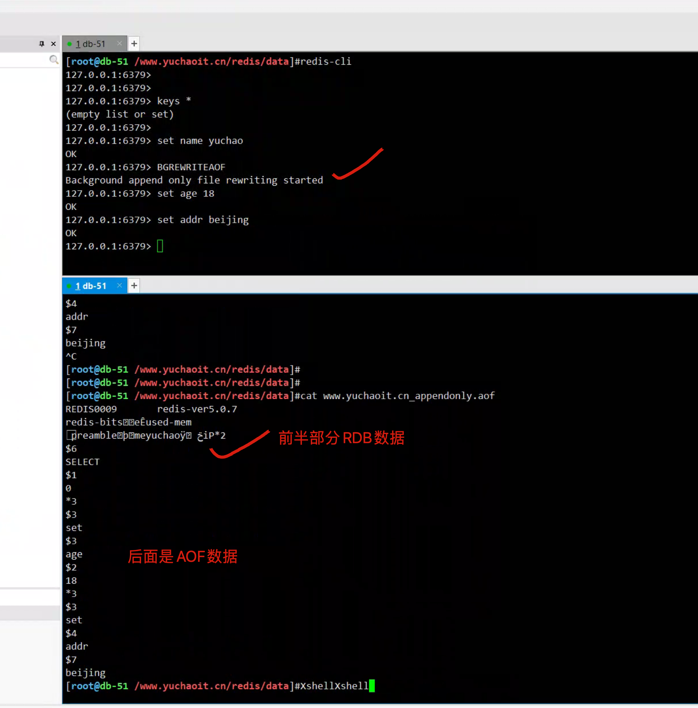
可以看出 appendonly.aof 文件存储的内容是 REDIS 开头的 RDB 格式的内容，并非为 AOF 格式的日志。
混合持久化数据恢复
混合持久化的数据恢复和 AOF 持久化过程是一样的，只需要把 appendonly.aof 放到 Redis 的根目录
在 Redis 启动时，只要开启了 AOF 持久化，Redis 就会自动加载并恢复数据。
Redis 启动信息如下图所示：
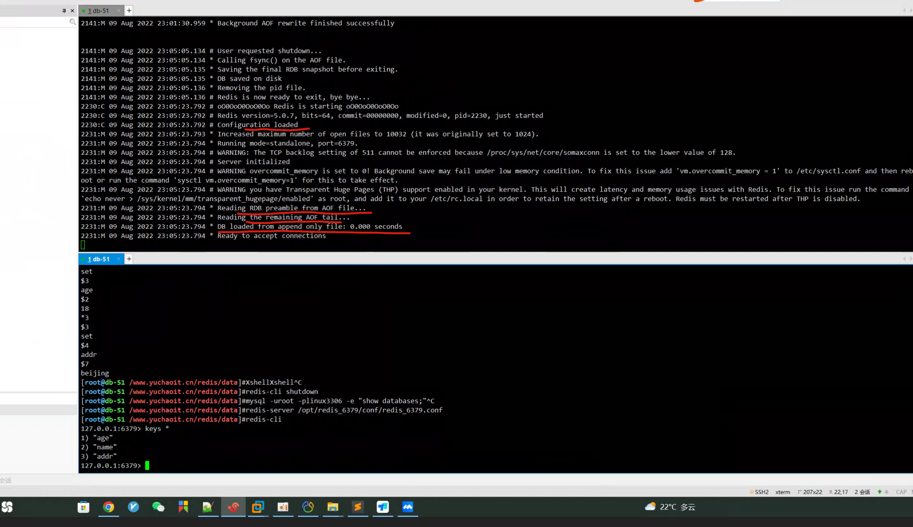
可以看到redis在服务端启动的时候，加载的是AOF文件内容。
混合持久化的加载流程
混合持久化的加载流程如下：
- 判断是否开启 AOF 持久化，开启继续执行后续流程，未开启执行加载 RDB 文件的流程；
- 判断 appendonly.aof 文件是否存在，文件存在则执行后续流程；
- 判断 AOF 文件开头是 RDB 的格式, 先加载 RDB 内容再加载剩余的 AOF 内容；
- 判断 AOF 文件开头不是 RDB 的格式，直接以 AOF 格式加载整个文件。
AOF 加载流程图如下图所示：
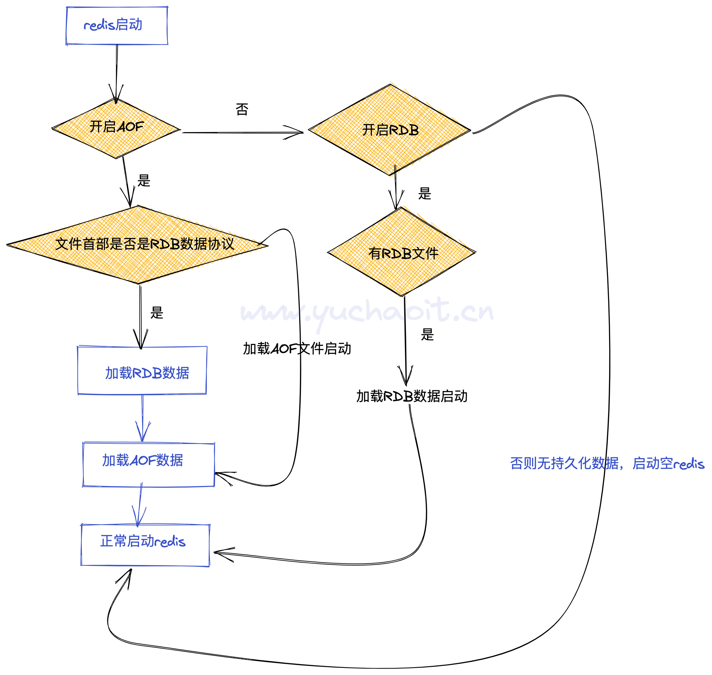
优缺点
混合持久化优点：
- 混合持久化结合了 RDB 和 AOF 持久化的优点，开头为 RDB 的格式，使得 Redis 可以更快的启动，同时结合 AOF 的优点，有减低了大量数据丢失的风险。
混合持久化缺点：
- AOF 文件中添加了 RDB 格式的内容，使得 AOF 文件的可读性变得很差；
- 兼容性差，如果开启混合持久化，那么此混合持久化 AOF 文件，就不能用在 Redis 4.0 之前版本了。
持久化最佳实践
https://redis.io/topics/persistence
官网给了建议
持久化虽然保证了数据不丢失，但同时拖慢了 Redis 的运行速度，那怎么更合理的使用 Redis 的持久化功能呢？ Redis 持久化的最佳实践可从以下几个方面考虑。
1）控制持久化开关
使用者可根据实际的业务情况考虑，如果对数据的丢失不敏感的情况下，可考虑关闭 Redis 的持久化，这样所以的键值操作都在内存中，就可以保证最高效率的运行 Redis 了。 持久化关闭操作：
- 关闭 RDB 持久化，使用命令：
config set save "" - 关闭 AOF 和 混合持久化，使用命令：
config set appendonly no
2）主从部署
使用主从部署，一台用于响应主业务，一台用于数据持久化，这样就可能让 Redis 更加高效的运行。
3）使用混合持久化
混合持久化结合了 RDB 和 AOF 的优点，Redis 5.0 默认是开启的。
4）使用配置更高的机器
Redis 对 CPU 的要求并不高，反而是对内存和磁盘的要求很高，因为 Redis 大部分时候都在做读写操作，使用更多的内存和更快的磁盘，对 Redis 性能的提高非常有帮助。